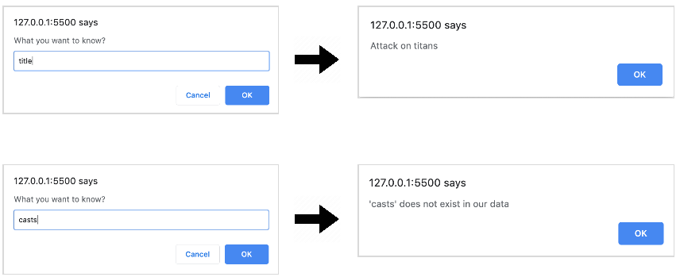

Read Object
2.3 You can check whether a value is undefined (has no value) or not by using if - else pair for example
if (x == null || x == undefined) {
alert(‘x is null or undefined’);
} else {
alert(‘x has real value’);
}
You can test it against:
let x = 5; // has value
Or
let x; // no value or undefined
Now apply it to upgrade Read object, after users enter the property, check whether the property exists, if yes, show them the value, if no, tell them that
